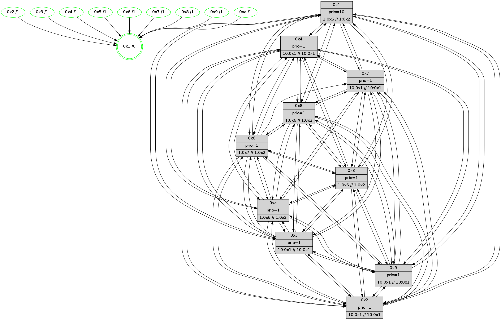

>> << IDX [start] -100 -25 -5 +0 +5 +25 +100 [595.467484951]
 Previous packets
590.000547 beacon06(faad) #0 coord=01,02,03,04,05,06,07,0a,09,08 cycle=688.0ms assoc 64 48 6d
590.010547 beacon07(faad) #0 coord=01,02,03,04,05,06,07,0a,09,08 cycle=688.0ms assoc 64 32 20
590.020552 beacon0a(faad) #0 coord=01,02,03,04,05,06,07,0a,09,08 cycle=688.0ms assoc 64 43 2b
590.030551 beacon09(faad) #0 coord=01,02,03,04,05,06,07,0a,09,08 cycle=688.0ms assoc 64 cd fc
590.040552 beacon08(faad) #0 coord=01,02,03,04,05,06,07,0a,09,08 cycle=688.0ms assoc 64 b7 b1
590.053682 [Hello(2): seq=376 sym=4,5,7,6,3,9,8,10,1 sysInfo=hasWarning stat=4:9,6,11,2/5:6,8,8,4/7:15,9,14,3/6:4,15,13,3/3:2,7,6,1/9:14,1,9,1/8:3,11,6,2/10:13,12,8,3/1:5,15,6,0]
590.060377 [Color(5) seq=43 @0:0 prio=1 >10.@1,1.@4,1.@6,1.@7 >>10.@1,1.@2,1.@3]
590.063581 [Hello(7): seq=379 sym=2,3,5,6,4,8,9,10,1 sysInfo= stat=2:10,0,0,7/3:3,0,15,7/5:5,13,13,8/6:2,6,0,0/4:9,8,15,5/8:2,4,0,3/9:0,11,0,7/10:5,14,15,5/1:3,0,6,0]
590.066303 [Color(3) seq=59 @0:0 prio=1 >1.@6,1.@7,1.@8,1.@9 >>1.@2,1.@3,1.@4]
590.069156 [Hello(6): seq=379 sym=2,3,5,4,7,9,8,10,1 sysInfo=coloring-mode-on,ColoringModeIndicationCalled stat=2:4,6,2,4/3:9,3,14,5/5:9,14,13,7/4:5,14,14,5/7:14,13,14,3/9:6,15,0,6/8:8,14,13,4/10:10,1,1,5/1:3,4,4,0]
590.071669 [Color(7) seq=47 @0:0 prio=1 >10.@1,1.@4,1.@6,1.@8 >>10.@1,1.@2,1.@3]
590.073834 [Color(6) seq=59 @0:0 prio=1 >1.@7,1.@8,1.@9,1.@a >>1.@2,1.@3,1.@4]
590.076816 [Color(10) seq=48 @0:0 prio=1 >1.@6,1.@7,1.@8,1.@9 >>1.@2,1.@3,1.@4]
----------------------------------------------------------------------
590.738693 beacon01(faad) #0 coord=01,02,03,04,05,06,07,0a,09,08 cycle=688.0ms assoc
-- color-indic=1 64 9e 64
590.748676 beacon02(faad) #0 coord=01,02,03,04,05,06,07,0a,09,08 cycle=688.0ms assoc 64 0d 55
590.758676 beacon03(faad) #0 coord=01,02,03,04,05,06,07,0a,09,08 cycle=688.0ms assoc 64 77 18
590.768677 beacon04(faad) #0 coord=01,02,03,04,05,06,07,0a,09,08 cycle=688.0ms assoc 64 00 f2
590.778676 beacon05(faad) #0 coord=01,02,03,04,05,06,07,0a,09,08 cycle=688.0ms assoc 64 7a bf
590.788676 beacon06(faad) #0 coord=01,02,03,04,05,06,07,0a,09,08 cycle=688.0ms assoc 64 f4 68
590.798676 beacon07(faad) #0 coord=01,02,03,04,05,06,07,0a,09,08 cycle=688.0ms assoc 64 8e 25
590.808680 beacon0a(faad) #0 coord=01,02,03,04,05,06,07,0a,09,08 cycle=688.0ms assoc 64 ff 2e
590.818680 beacon09(faad) #0 coord=01,02,03,04,05,06,07,0a,09,08 cycle=688.0ms assoc 64 71 f9
590.828682 beacon08(faad) #0 coord=01,02,03,04,05,06,07,0a,09,08 cycle=688.0ms assoc 64 0b b4
590.840199 [Hello(8): seq=323 sym=5,2,3,4,7,6,9,10,1 sysInfo=coloring-mode-on,ColoringModeIndicationCalled stat=5:5,3,10,5/2:15,10,2,0/3:14,13,11,6/4:4,1,13,5/7:7,3,15,4/6:15,15,12,4/9:11,14,14,4/10:6,7,9,5/1:4,2,7,0]
590.842908 [Hello(10): seq=312 sym=2,3,8,9,5,7,4,1 sysInfo= stat=2:14,8,3,0/3:14,11,3,1/8:14,13,12,4/9:12,0,9,3/5:0,3,8,5/7:10,3,11,2/4:13,3,8,6/1:9,12,6,0]
590.846251 [Hello(3): seq=380 sym=1,7,6,2,4,8,9,10,5 sysInfo=coloring-mode-on,ColoringModeIndicationCalled stat=1:13,1,8,0/7:11,6,10,3/6:2,7,8,4/2:4,0,11,6/4:5,15,11,4/8:2,13,6,0/9:10,15,14,5/10:4,1,8,3/5:7,0,11,5]
590.854022 [Color(2) seq=37 @0:0 prio=1 >10.@1,1.@4,1.@6,1.@7 >>10.@1,1.@2,1.@3]
590.859314 [Color(1) seq=60 @0:0 prio=10 >1.@6,1.@7,1.@8,1.@9 >>1.@2,1.@3,1.@4]
----------------------------------------------------------------------
591.526824 beacon01(faad) #0 coord=01,02,03,04,05,06,07,0a,09,08 cycle=688.0ms assoc
-- color-indic=1 64 0a bd
591.536807 beacon02(faad) #0 coord=01,02,03,04,05,06,07,0a,09,08 cycle=688.0ms assoc 64 99 8c
591.546807 beacon03(faad) #0 coord=01,02,03,04,05,06,07,0a,09,08 cycle=688.0ms assoc 64 e3 c1
591.556808 beacon04(faad) #0 coord=01,02,03,04,05,06,07,0a,09,08 cycle=688.0ms assoc 64 94 2b
591.566808 beacon05(faad) #0 coord=01,02,03,04,05,06,07,0a,09,08 cycle=688.0ms assoc 64 ee 66
591.576807 beacon06(faad) #0 coord=01,02,03,04,05,06,07,0a,09,08 cycle=688.0ms assoc 64 60 b1
591.586807 beacon07(faad) #0 coord=01,02,03,04,05,06,07,0a,09,08 cycle=688.0ms assoc 64 1a fc
591.596811 beacon0a(faad) #0 coord=01,02,03,04,05,06,07,0a,09,08 cycle=688.0ms assoc 64 6b f7
591.606813 beacon09(faad) #0 coord=01,02,03,04,05,06,07,0a,09,08 cycle=688.0ms assoc 64 e5 20
591.616812 beacon08(faad) #0 coord=01,02,03,04,05,06,07,0a,09,08 cycle=688.0ms assoc 64 9f 6d
591.628713 [Hello(1): seq=289 sym=4,2,9,5,10,3,8,6,7 sysInfo=coloring-mode-on,ColoringModeRequestCalled stat=4:14,7,1,6/2:12,4,0,6/9:11,11,5,6/5:7,0,0,7/10:4,6,2,5/3:12,12,6,8/8:1,7,5,5/6:5,2,3,3/7:13,9,5,7]
591.631433 [Color(10) seq=49 @0:0 prio=1 >1.@6,1.@7,1.@8,1.@9 >>1.@2,1.@3,1.@4]
591.633672 [Color(8) seq=60 @0:0 prio=1 >1.@6,1.@7,1.@9,1.@a >>1.@2,1.@3,1.@4]
591.636043 [Hello(6): seq=380 sym=2,3,5,4,7,9,8,10,1 sysInfo=coloring-mode-on,ColoringModeIndicationCalled stat=2:5,7,2,4/3:10,3,14,5/5:10,14,13,7/4:5,14,14,5/7:14,13,14,3/9:6,15,0,6/8:9,14,13,4/10:11,2,1,5/1:3,5,4,0]
591.639070 [Color(3) seq=60 @0:0 prio=1 >1.@6,1.@7,1.@8,1.@9 >>1.@2,1.@3,1.@4]
591.642269 [Color(9) seq=44 @0:0 prio=1 >10.@1,1.@4,1.@6,1.@7 >>10.@1,1.@2,1.@3]
591.644816 [Color(5) seq=44 @0:0 prio=1 >10.@1,1.@4,1.@6,1.@7 >>10.@1,1.@2,1.@3]
591.647137 [Hello(2): seq=377 sym=4,5,7,6,3,9,8,10,1 sysInfo=hasWarning stat=4:9,7,11,2/5:6,9,8,4/7:0,10,14,3/6:5,0,13,3/3:2,8,6,1/9:14,1,9,1/8:4,11,6,2/10:13,13,8,3/1:5,0,6,0]
591.649694 [Color(6) seq=60 @0:0 prio=1 >1.@7,1.@8,1.@9,1.@a >>1.@2,1.@3,1.@4]
591.652220 [Hello(7): seq=380 sym=2,3,5,6,4,8,9,10,1 sysInfo= stat=2:11,1,0,7/3:4,0,15,7/5:6,13,13,8/6:2,7,0,0/4:9,8,15,5/8:3,4,0,3/9:0,11,0,7/10:6,15,15,5/1:3,1,6,0]
591.656840 [Color(4) seq=35 @0:0 prio=1 >10.@1,1.@2,1.@3,1.@5 >>10.@1,1.@4,1.@6]
591.660611 [Color(7) seq=48 @0:0 prio=1 >10.@1,1.@4,1.@6,1.@8 >>10.@1,1.@2,1.@3]
----------------------------------------------------------------------
592.314958 beacon01(faad) #0 coord=01,02,03,04,05,06,07,0a,09,08 cycle=688.0ms assoc
-- color-indic=1 64 b6 b8
592.324941 beacon02(faad) #0 coord=01,02,03,04,05,06,07,0a,09,08 cycle=688.0ms assoc 64 25 89
592.334939 beacon03(faad) #0 coord=01,02,03,04,05,06,07,0a,09,08 cycle=688.0ms assoc 64 5f c4
592.344939 beacon04(faad) #0 coord=01,02,03,04,05,06,07,0a,09,08 cycle=688.0ms assoc 64 28 2e
592.354939 beacon05(faad) #0 coord=01,02,03,04,05,06,07,0a,09,08 cycle=688.0ms assoc 64 52 63
592.364940 beacon06(faad) #0 coord=01,02,03,04,05,06,07,0a,09,08 cycle=688.0ms assoc 64 dc b4
592.374941 beacon07(faad) #0 coord=01,02,03,04,05,06,07,0a,09,08 cycle=688.0ms assoc 64 a6 f9
592.384946 beacon0a(faad) #0 coord=01,02,03,04,05,06,07,0a,09,08 cycle=688.0ms assoc 64 d7 f2
592.394946 beacon09(faad) #0 coord=01,02,03,04,05,06,07,0a,09,08 cycle=688.0ms assoc 64 59 25
592.404945 beacon08(faad) #0 coord=01,02,03,04,05,06,07,0a,09,08 cycle=688.0ms assoc 64 23 68
592.416181 [Hello(3): seq=381 sym=1,7,6,2,4,8,9,10,5 sysInfo=coloring-mode-on,ColoringModeIndicationCalled stat=1:14,2,8,0/7:12,7,10,3/6:2,8,8,4/2:5,1,11,6/4:5,0,11,4/8:2,13,6,0/9:10,0,14,5/10:4,1,8,3/5:8,1,11,5]
592.418867 [Hello(5): seq=381 sym=7,6,4,3,1,9,8,10,2 sysInfo= stat=7:13,4,1,3/6:15,15,15,3/4:3,4,10,3/3:3,12,6,2/1:14,2,5,0/9:1,5,11,3/8:1,9,8,3/10:1,11,12,4/2:8,6,11,3]
592.421589 [STC(1) #0.35 tree-change,inconsistent-stability,stable,to-color d=0]
592.423461 [Hello(10): seq=313 sym=6,2,3,8,9,5,7,4,1 sysInfo= stat=6:0,1,0,0/2:15,9,3,0/3:15,12,3,1/8:14,14,12,4/9:12,1,9,3/5:1,4,8,5/7:11,4,11,2/4:13,4,8,6/1:10,13,6,0]
592.426539 [Color(1) seq=61 @0:0 prio=10 >1.@6,1.@7,1.@8,1.@9 >>1.@2,1.@3,1.@4]
592.428650 [Color(2) seq=38 @0:0 prio=1 >10.@1,1.@4,1.@6,1.@7 >>10.@1,1.@2,1.@3]
592.432242 [Hello(4): seq=381 sym=5,7,6,2,3,9,8,10,1 sysInfo= stat=5:9,8,10,6/7:1,8,14,2/6:4,14,13,4/2:12,3,10,5/3:14,5,4,2/9:11,7,9,3/8:2,1,14,5/10:8,10,12,4/1:10,15,8,0]
592.435954 [Hello(9): seq=324 sym=5,2,3,4,7,6,8,10,1 sysInfo=hasWarning stat=5:5,4,8,6/2:7,3,14,4/3:7,5,9,4/4:9,1,11,4/7:13,4,14,2/6:4,10,11,3/8:3,2,8,2/10:2,5,11,5/1:6,14,8,0]
----------------------------------------------------------------------
593.103090 beacon01(faad) #0 coord=01,02,03,04,05,06,07,0a,09,08 cycle=688.0ms assoc
-- color-indic=1 64 72 b6
593.113071 beacon02(faad) #0 coord=01,02,03,04,05,06,07,0a,09,08 cycle=688.0ms assoc 64 e1 87
593.123071 beacon03(faad) #0 coord=01,02,03,04,05,06,07,0a,09,08 cycle=688.0ms assoc 64 9b ca
593.133073 beacon04(faad) #0 coord=01,02,03,04,05,06,07,0a,09,08 cycle=688.0ms assoc 64 ec 20
593.143073 beacon05(faad) #0 coord=01,02,03,04,05,06,07,0a,09,08 cycle=688.0ms assoc 64 96 6d
593.153072 beacon06(faad) #0 coord=01,02,03,04,05,06,07,0a,09,08 cycle=688.0ms assoc 64 18 ba
593.163076 beacon07(faad) #0 coord=01,02,03,04,05,06,07,0a,09,08 cycle=688.0ms assoc 64 62 f7
593.173077 beacon0a(faad) #0 coord=01,02,03,04,05,06,07,0a,09,08 cycle=688.0ms assoc 64 13 fc
593.183077 beacon09(faad) #0 coord=01,02,03,04,05,06,07,0a,09,08 cycle=688.0ms assoc 64 9d 2b
593.193078 beacon08(faad) #0 coord=01,02,03,04,05,06,07,0a,09,08 cycle=688.0ms assoc 64 e7 66
593.204011 [Hello(1): seq=290 sym=4,2,9,5,10,3,8,6,7 sysInfo=coloring-mode-on,ColoringModeRequestCalled stat=4:15,8,1,6/2:13,5,0,6/9:12,12,5,6/5:7,1,0,7/10:4,7,2,5/3:13,13,6,8/8:1,8,5,5/6:6,3,3,3/7:14,10,5,7]
593.207169 [STC(3)->1 #0.35 tree-change,inconsistent-stability,stable,to-color d=1]
593.209908 [Hello(7): seq=381 sym=2,3,5,6,4,8,9,10,1 sysInfo= stat=2:11,2,0,7/3:5,0,15,7/5:7,13,13,8/6:2,7,0,0/4:10,8,15,5/8:3,4,0,3/9:1,11,0,7/10:7,15,15,5/1:4,2,7,0]
593.212417 [Hello(6): seq=381 sym=2,3,5,4,7,9,8,10,1 sysInfo=coloring-mode-on,ColoringModeIndicationCalled stat=2:5,8,2,4/3:10,3,14,5/5:11,14,13,7/4:6,15,14,5/7:15,14,14,3/9:7,15,0,6/8:10,14,13,4/10:12,2,1,5/1:4,6,5,0]
593.215417 [STC(5)->1 #0.35 tree-change,inconsistent-stability,stable,to-color d=1]
593.217657 [STC(7)->1 #0.35 tree-change,inconsistent-stability,stable,to-color d=1]
593.218944 [Color(3) seq=61 @0:0 prio=1 >1.@6,1.@7,1.@8,1.@9 >>1.@2,1.@3,1.@4]
593.221013 [STC(8)->1 #0.35 tree-change,inconsistent-stability,stable,to-color d=1]
593.224232 [Hello(2): seq=378 sym=4,5,7,6,3,9,8,10,1 sysInfo=hasWarning stat=4:10,8,11,2/5:6,9,8,4/7:1,11,14,3/6:5,1,13,3/3:3,8,6,1/9:15,1,9,1/8:4,11,6,2/10:13,13,8,3/1:5,0,6,0]
593.227977 [Color(4) seq=36 @0:0 prio=1 >10.@1,1.@2,1.@3,1.@5 >>10.@1,1.@4,1.@6]
593.230240 [Color(7) seq=49 @0:0 prio=1 >10.@1,1.@4,1.@6,1.@8 >>10.@1,1.@2,1.@3]
593.232159 [Color(5) seq=45 @0:0 prio=1 >10.@1,1.@4,1.@6,1.@7 >>10.@1,1.@2,1.@3]
593.235299 [STC(6)->1 #0.35 tree-change,inconsistent-stability,stable,to-color d=1]
593.236995 [Color(8) seq=61 @0:0 prio=1 >1.@6,1.@7,1.@9,1.@a >>1.@2,1.@3,1.@4]
593.239621 [TreeStatus(6)-.->1 #0.35 tree-change,inconsistent-stability,stable child=1]
593.241152 [Color(6) seq=61 @0:0 prio=1 >1.@7,1.@8,1.@9,1.@a >>1.@2,1.@3,1.@4]
593.250455 [Color(10) seq=50 @0:0 prio=1 >1.@6,1.@7,1.@8,1.@9 >>1.@2,1.@3,1.@4]
----------------------------------------------------------------------
593.891222 beacon01(faad) #0 coord=01,02,03,04,05,06,07,0a,09,08 cycle=688.0ms assoc
-- color-indic=1 64 ce b3
593.901204 beacon02(faad) #0 coord=01,02,03,04,05,06,07,0a,09,08 cycle=688.0ms assoc 64 5d 82
593.911207 beacon03(faad) #0 coord=01,02,03,04,05,06,07,0a,09,08 cycle=688.0ms assoc 64 27 cf
593.921204 beacon04(faad) #0 coord=01,02,03,04,05,06,07,0a,09,08 cycle=688.0ms assoc 64 50 25
593.931206 beacon05(faad) #0 coord=01,02,03,04,05,06,07,0a,09,08 cycle=688.0ms assoc 64 2a 68
593.941205 beacon06(faad) #0 coord=01,02,03,04,05,06,07,0a,09,08 cycle=688.0ms assoc 64 a4 bf
593.951206 beacon07(faad) #0 coord=01,02,03,04,05,06,07,0a,09,08 cycle=688.0ms assoc 64 de f2
593.961212 beacon0a(faad) #0 coord=01,02,03,04,05,06,07,0a,09,08 cycle=688.0ms assoc 64 af f9
593.971210 beacon09(faad) #0 coord=01,02,03,04,05,06,07,0a,09,08 cycle=688.0ms assoc 64 21 2e
593.981210 beacon08(faad) #0 coord=01,02,03,04,05,06,07,0a,09,08 cycle=688.0ms assoc 64 5b 63
593.992450 [Hello(3): seq=382 sym=1,7,6,2,4,8,9,10,5 sysInfo=coloring-mode-on,ColoringModeIndicationCalled stat=1:15,3,9,0/7:12,8,10,3/6:2,9,9,5/2:6,2,11,6/4:6,1,11,4/8:2,14,7,0/9:11,0,14,5/10:5,2,8,3/5:9,2,11,5]
593.995111 [Hello(4): seq=382 sym=5,7,6,2,3,9,8,10,1 sysInfo= stat=5:9,9,10,6/7:1,9,14,2/6:4,15,14,5/2:12,3,10,5/3:14,5,4,2/9:12,7,9,3/8:2,2,14,5/10:8,11,12,4/1:11,15,8,0]
593.998130 [Hello(10): seq=314 sym=6,2,3,8,9,5,7,4,1 sysInfo= stat=6:0,1,0,0/2:15,10,3,0/3:15,12,3,1/8:14,14,12,4/9:13,1,9,3/5:1,4,8,5/7:11,4,11,2/4:14,4,8,6/1:11,14,6,0]
594.001980 [Hello(8): seq=325 sym=5,2,3,4,7,6,9,10,1 sysInfo=coloring-mode-on,ColoringModeIndicationCalled stat=5:6,4,10,5/2:0,12,2,0/3:15,14,11,6/4:5,2,13,5/7:8,4,15,4/6:0,1,12,5/9:12,15,14,4/10:8,8,9,5/1:6,4,8,0]
594.005146 [Color(2) seq=39 @0:0 prio=1 >10.@1,1.@4,1.@6,1.@7 >>10.@1,1.@2,1.@3]
594.013465 [Hello(9): seq=325 sym=5,2,3,4,7,6,8,10,1 sysInfo=hasWarning stat=5:5,5,9,6/2:8,3,14,4/3:7,6,9,4/4:9,2,11,4/7:14,5,15,2/6:5,11,12,4/8:3,3,9,2/10:2,6,11,5/1:7,14,8,0]
594.016369 [Color(1) seq=62 @0:0 prio=10 >1.@6,1.@7,1.@8,1.@9 >>1.@2,1.@3,1.@4]
----------------------------------------------------------------------
594.679352 beacon01(faad) #0 coord=01,02,03,04,05,06,07,0a,09,08 cycle=688.0ms assoc
-- color-indic=1 64 fa ab
594.689334 beacon02(faad) #0 coord=01,02,03,04,05,06,07,0a,09,08 cycle=688.0ms assoc 64 69 9a
594.699335 beacon03(faad) #0 coord=01,02,03,04,05,06,07,0a,09,08 cycle=688.0ms assoc 64 13 d7
594.709335 beacon04(faad) #0 coord=01,02,03,04,05,06,07,0a,09,08 cycle=688.0ms assoc 64 64 3d
594.719335 beacon05(faad) #0 coord=01,02,03,04,05,06,07,0a,09,08 cycle=688.0ms assoc 64 1e 70
594.729335 beacon06(faad) #0 coord=01,02,03,04,05,06,07,0a,09,08 cycle=688.0ms assoc 64 90 a7
594.739335 beacon07(faad) #0 coord=01,02,03,04,05,06,07,0a,09,08 cycle=688.0ms assoc 64 ea ea
594.749340 beacon0a(faad) #0 coord=01,02,03,04,05,06,07,0a,09,08 cycle=688.0ms assoc 64 9b e1
594.759339 beacon09(faad) #0 coord=01,02,03,04,05,06,07,0a,09,08 cycle=688.0ms assoc 64 15 36
594.780285 [Hello(1): seq=291 sym=4,2,9,5,10,3,8,6,7 sysInfo=coloring-mode-on,ColoringModeRequestCalled stat=4:15,9,1,6/2:14,5,0,6/9:12,12,5,6/5:7,2,1,7/10:4,8,2,5/3:14,14,7,8/8:1,9,6,5/6:7,4,4,4/7:15,11,6,7]
594.783239 [Color(4) seq=37 @0:0 prio=1 >10.@1,1.@2,1.@3,1.@5 >>10.@1,1.@4,1.@6]
594.785739 [Hello(7): seq=382 sym=2,3,5,4,8,9,10,1 sysInfo= stat=2:11,3,0,7/3:5,0,0,7/5:7,14,13,8/4:11,8,15,5/8:4,5,0,3/9:2,11,0,7/10:8,0,15,5/1:5,3,7,0]
594.788113 [Hello(6): seq=382 sym=2,3,5,4,7,9,8,10,1 sym= sysInfo=coloring-mode-on,ColoringModeIndicationCalled stat=]
594.790624 [Color(8) seq=62 @0:0 prio=1 >1.@6,1.@7,1.@9,1.@a >>1.@2,1.@3,1.@4]
594.793623 [Color(3) seq=62 @0:0 prio=1 >1.@6,1.@7,1.@8,1.@9 >>1.@2,1.@3,1.@4]
594.797936 [Color(9) seq=46 @0:0 prio=1 >10.@1,1.@4,1.@6,1.@7 >>10.@1,1.@2,1.@3]
594.800092 [Color(5) seq=46 @0:0 prio=1 >10.@1,1.@4,1.@6,1.@7 >>10.@1,1.@2,1.@3]
594.802129 [Color(7) seq=50 @0:0 prio=1 >10.@1,1.@4,1.@6,1.@8 >>10.@1,1.@2,1.@3]
594.806048 [Color(6) seq=62 @0:0 prio=1 >1.@7,1.@8,1.@9,1.@a >>1.@2,1.@3,1.@4]
594.808526 [Color(10) seq=51 @0:0 prio=1 >1.@6,1.@7,1.@8,1.@9 >>1.@2,1.@3,1.@4]
594.811945 [Hello(2): seq=379 sym=4,5,7,6,3,9,8,10,1 sysInfo=hasWarning stat=4:10,9,11,2/5:6,10,8,4/7:1,12,14,3/6:5,2,14,4/3:3,8,6,1/9:0,1,9,1/8:4,12,6,2/10:13,14,8,3/1:5,1,6,0]